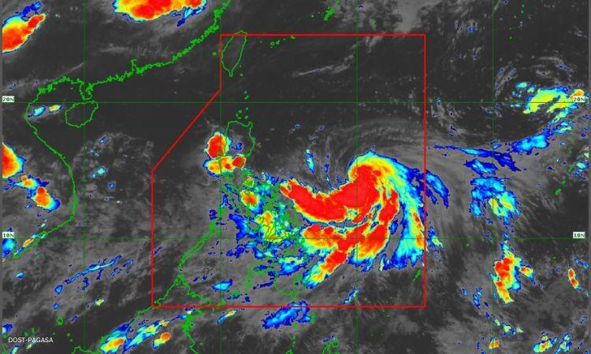
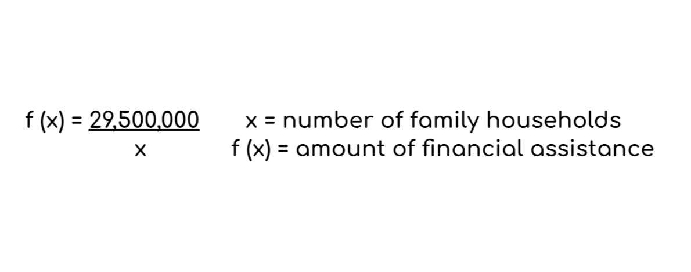
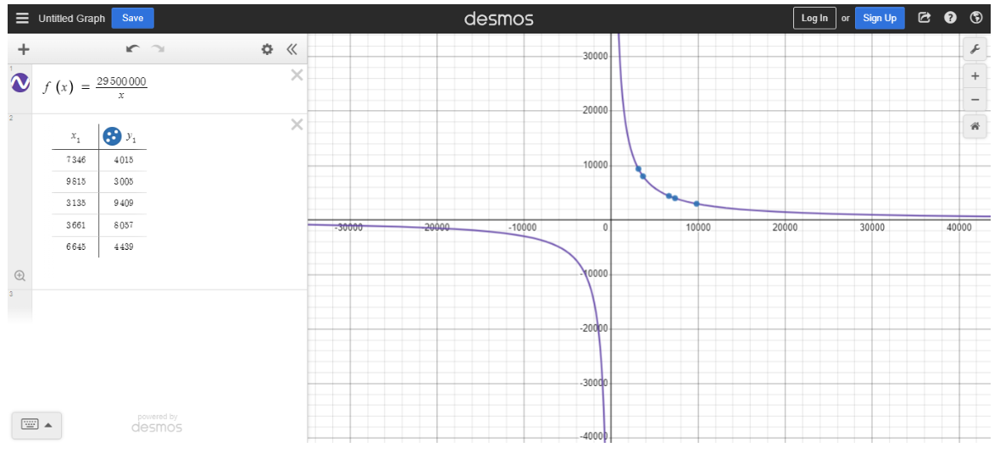
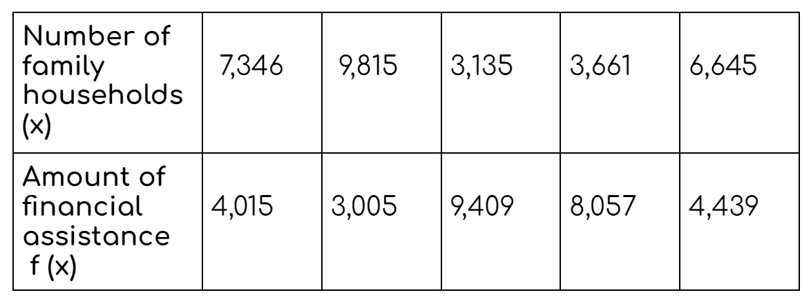

Giving Financial Assistance on Typhoon Egay Victims
Introduction
What, where, and when did it happen.

TYPHOON EGAY
"Egay" maintained its strength as it rushed over the Philippine Sea in a westward and northwesterly direction. The following day, TD "Egay" slowly increased power and intensified into a Tropical Storm. For the next three days, "Egay" continued to have an effect on the country, increasing the Southwest Monsoon and bringing occasional rain to many areas. On July 24, 2023, a hurricane named "Egay" formed as it moved steadily north and northwest. On July 25, 2023, "Egay" strengthened into a Super Typhoon and continued to menace Northern Luzon. The southwest monsoon, which has been boosted by "Egay," will continue to bring occasional monsoon rain to the western regions of Central Luzon, Southern Luzon, and Visayas over the next three days. Furthermore, "Egay" and the bolstered Southwest Monsoon continued to produce windy weather to wind-exposed coastal and upland/mountainous locations.
Distribution of Clamity Funds
Function that models the distribution of the calamity fund in terms of the municipality's number of households.

Number of households of the 5 municipalities (2020)
1. Santo Domingo - 7,346
2. Santa Cruz - 9,815
3. Burgos - 3,135
4. Santa - 3,661
5. Santa Lucia -6,645
Table & Graph Representation
Illustrating the distributtion of calamity funds using graph and table.

Interpretation of the graph:
Examining the graph representation, a distinctive pattern emerges, revealing an intriguing inverse correlation between the quantity of households and the corresponding budget allocations. Particularly, the household count takes on a peculiar curve, exhibiting a negative or a downward curve when observed from the left side of the graph. In contrast, the budget starts high at the top and goes down smoothly as you look towards the right side of the graph. The relationship between households and budgets can be compared to a active interaction or changing relationship on a graph. Imagine the number of households decreasing or curving, while the budget starts high and gradually decreases from the top to the right side. It's like a smooth and gradual motion that illustrates the connection between these two factors.
Insert text